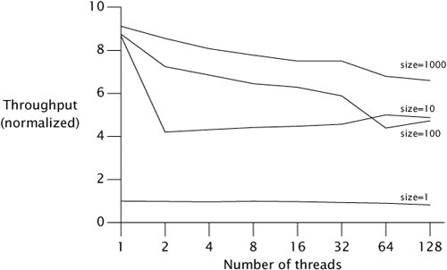
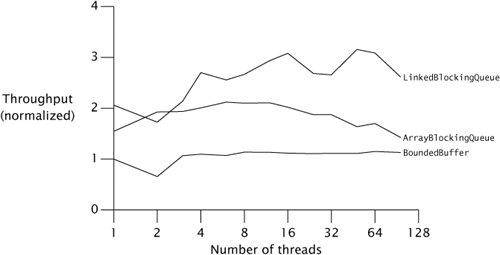
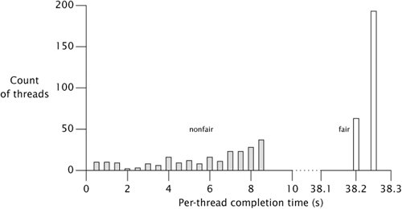
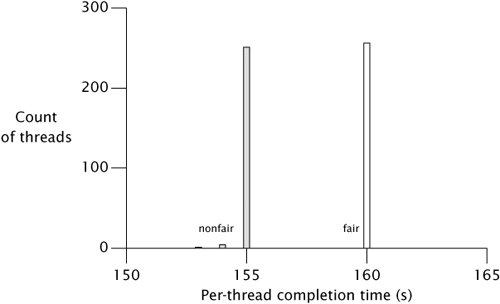

{% include JB/setup %}
{% raw %}
<div>


<a href="21021536.html" class="calibre2"></a><a name="ch12lev1sec2" class="calibre18" id="ch12lev1sec2"></a>
<h3 id="title-IDAFDZBQ" class="docSection1Title">12.2. Testing for Performance</h3>
<p class="docText1"><a name="iddle1193" class="calibre18" id="iddle1193"></a><a name="iddle1744" class="calibre18" id="iddle1744"></a><a name="iddle2162" class="calibre18" id="iddle2162"></a><a name="iddle2417" class="calibre18" id="iddle2417"></a><a name="iddle2418" class="calibre18" id="iddle2418"></a><a name="iddle3538" class="calibre18" id="iddle3538"></a><a name="iddle4309" class="calibre18" id="iddle4309"></a><a name="iddle4695" class="calibre18" id="iddle4695"></a><a name="iddle4696" class="calibre18" id="iddle4696"></a><a name="iddle4699" class="calibre18" id="iddle4699"></a><a name="iddle4701" class="calibre18" id="iddle4701"></a><a name="iddle4912" class="calibre18" id="iddle4912"></a><a name="iddle4913" class="calibre18" id="iddle4913"></a><a name="iddle5021" class="calibre18" id="iddle5021"></a><a name="iddle5022" class="calibre18" id="iddle5022"></a>Performance tests are often extended versions of functionality tests. In fact, it is almost always worthwhile to include some basic functionality testing within performance tests to ensure that you are not testing the performance of broken code.</p>
<p class="docText1">While there is definitely overlap between performance and functionality tests, they have different goals. Performance tests seek to measure end-to-end performance metrics for representative use cases. Picking a reasonable set of usage scenarios is not always easy; ideally, tests should reflect how the objects being tested are actually used in your application.</p>
<p class="docText1">In some cases an appropriate test scenario is obvious. Bounded buffers are nearly always used in producer-consumer designs, so it is sensible to measure the throughput of producers feeding data to consumers. We can easily extend <tt class="calibre25">PutTakeTest</tt> to become a performance test for this scenario.</p>
<p class="docText1">A common secondary goal of performance testing is to select sizings empirically for various boundsnumbers of threads, buffer capacities, and so on. While these values might turn out to be sensitive enough to platform characteristics (such as processor type or even processor stepping level, number of CPUs, or memory size) to require dynamic configuration, it is equally common that reasonable choices for these values work well across a wide range of systems.</p>
<a name="ch12lev2sec7" class="calibre18" id="ch12lev2sec7"></a>
<h4 id="title-IDA2IZBQ" class="docSection2Title">12.2.1. Extending PutTakeTest to Add Timing</h4>
<p class="docText1">The primary extension we have to make to <tt class="calibre25">PutTakeTest</tt> is to measure the time taken for a run. Rather than attempting to measure the time for a single operation, we get a more accurate measure by timing the entire run and dividing by the number of operations to get a per-operation time. We are already using a <tt class="calibre25">CyclicBarrier</tt> to start and stop the worker threads, so we can extend this by using a barrier action that measures the start and end time, as shown in <a class="calibre2" href="#ch12list11">Listing 12.11</a>.</p>
<p class="docText1">We can modify the initialization of the barrier to use this barrier action by using the constructor for <tt class="calibre25">CyclicBarrier</tt> that accepts a barrier action:</p>
<a name="ch12list11" class="calibre18" id="ch12list11"></a><h5 id="title-IDAZJZBQ" class="docExampleTitle">Listing 12.11. Barrier-based Timer.</h5><p class="calibre21"><table cellspacing="0" width="90%" border="1" cellpadding="5" class="calibre5"><tr class="calibre6"><td class="calibre28">
<pre class="calibre30">this.timer = new BarrierTimer();
this.barrier = new CyclicBarrier(npairs * 2 + 1, timer);
public class BarrierTimer implements Runnable {
    private boolean started;
    private long startTime, endTime;

    public synchronized void run() {
        long t = System.nanoTime();
        if (!started) {
            started = true;
            startTime = t;
        } else
            endTime = t;
    }
    public synchronized void clear() {
        started = false;
    }
    public synchronized long getTime() {
        return endTime - startTime;
    }
}
</pre><br class="calibre11"/>
</td></tr></table></p>
<p class="docText1"><a name="iddle1246" class="calibre18" id="iddle1246"></a><a name="iddle1247" class="calibre18" id="iddle1247"></a><a name="iddle1264" class="calibre18" id="iddle1264"></a><a name="iddle1265" class="calibre18" id="iddle1265"></a><a name="iddle1270" class="calibre18" id="iddle1270"></a><a name="iddle1271" class="calibre18" id="iddle1271"></a><a name="iddle1712" class="calibre18" id="iddle1712"></a><a name="iddle2080" class="calibre18" id="iddle2080"></a><a name="iddle2205" class="calibre18" id="iddle2205"></a><a name="iddle3471" class="calibre18" id="iddle3471"></a><a name="iddle3687" class="calibre18" id="iddle3687"></a><a name="iddle4086" class="calibre18" id="iddle4086"></a><a name="iddle4310" class="calibre18" id="iddle4310"></a><a name="iddle4311" class="calibre18" id="iddle4311"></a><a name="iddle4870" class="calibre18" id="iddle4870"></a><a name="iddle4871" class="calibre18" id="iddle4871"></a>The modified <tt class="calibre25">test</tt> method using the barrier-based timer is shown in <a class="calibre2" href="#ch12list12">Listing 12.12</a>.</p>
<p class="docText1">We can learn several things from running <tt class="calibre25">TimedPutTakeTest</tt>. One is the throughput of the producer-consumer handoff operation for various combinations of parameters; another is how the bounded buffer scales with different numbers of threads; a third is how we might select the bound size. Answering these questions requires running the test for various combinations of parameters, so we'll need amain test driver, shown in <a class="calibre2" href="#ch12list13">Listing 12.13</a>.</p>
<p class="docText1"><a class="calibre2" href="#ch12fig01">Figure 12.1</a> shows some sample results on a 4-way machine, using buffer capacities of 1, 10, 100, and 1000. We see immediately that a buffer size of one causes very poor throughput; this is because each thread can make only a tiny bit of progress before blocking and waiting for another thread. Increasing buffer size to ten helps dramatically, but increases past ten offer diminishing returns.</p>
<a name="ch12fig01" class="calibre18" id="ch12fig01"></a><p class="calibre21"><div class="calibre12">
<h5 class="docExampleTitle">Figure 12.1. <tt class="calibre33">TimedPutTakeTest</tt> with Various Buffer Capacities.</h5>
</div></p><p class="docText1"><div class="v8"><a target="_self" href="12fig01_alt.jpg" class="calibre2">[View full size image]</a></div></p>
<p class="calibre1"> </p>
<p class="docText1">It may be somewhat puzzling at first that adding a lot more threads degrades performance only slightly. The reason is hard to see from the data, but easy to see on a CPU performance meter such as <tt class="calibre25">perfbar</tt> while the test is running: even with many threads, not much computation is going on, and most of it is spent blocking and unblocking threads. So there is plenty of CPU slack for more threads to do the same thing without hurting performance very much.</p>
<p class="docText1">However, be careful about concluding from this data that you can always add more threads to a producer-consumer program that uses a bounded buffer. This test is fairly artificial in how it simulates the <span class="docEmphasis">application</span>; the producers do almost no work to generate the item placed on the queue, and the consumers do almost no work with the item retrieved. If the worker threads in a real producer-consumer <a name="iddle1973" class="calibre18" id="iddle1973"></a><a name="iddle1974" class="calibre18" id="iddle1974"></a><a name="iddle4686" class="calibre18" id="iddle4686"></a><a name="iddle1050" class="calibre18" id="iddle1050"></a><a name="iddle1076" class="calibre18" id="iddle1076"></a><a name="iddle1123" class="calibre18" id="iddle1123"></a><a name="iddle1585" class="calibre18" id="iddle1585"></a><a name="iddle1586" class="calibre18" id="iddle1586"></a><a name="iddle2988" class="calibre18" id="iddle2988"></a><a name="iddle4056" class="calibre18" id="iddle4056"></a><a name="iddle4057" class="calibre18" id="iddle4057"></a><a name="iddle4498" class="calibre18" id="iddle4498"></a>application do some nontrivial work to produce and consume items (as is generally the case), then this slack would disappear and the effects of having too many threads could be very noticeable. The primary purpose of this test is to measure what constraints the producer-consumer handoff via the bounded buffer imposes on overall throughput.</p>
<a name="ch12list12" class="calibre18" id="ch12list12"></a><h5 id="title-IDAKWZBQ" class="docExampleTitle">Listing 12.12. Testing with a Barrier-based Timer.</h5><p class="calibre21"><table cellspacing="0" width="90%" border="1" cellpadding="5" class="calibre5"><tr class="calibre6"><td class="calibre28">
<pre class="calibre30">public void test() {
    try {
        timer.clear();
        for (int i = 0; i &lt; nPairs; i++) {
            pool.execute(new Producer());
            pool.execute(new Consumer());
        }
        barrier.await();
        barrier.await();
        long nsPerItem = timer.getTime() / (nPairs*  (long)nTrials);
        System.out.print("Throughput: " + nsPerItem + " ns/item");
        assertEquals(putSum.get(), takeSum.get());
    } catch (Exception e) {
        throw new RuntimeException(e);
    }
}
</pre><br class="calibre11"/>
</td></tr></table></p>
<a name="ch12list13" class="calibre18" id="ch12list13"></a><h5 id="title-IDA3WZBQ" class="docExampleTitle">Listing 12.13. Driver Programfor <tt class="calibre33">TimedPutTakeTest</tt>.</h5><p class="calibre21"><table cellspacing="0" width="90%" border="1" cellpadding="5" class="calibre5"><tr class="calibre6"><td class="calibre28">
<pre class="calibre30">public static void main(String[] args) throws Exception {
    int tpt = 100000;  // <span class="docEmphasis">trials per thread</span>
    for (int cap = 1; cap &lt;= 1000; cap*= 10) {
        System.out.println("Capacity: " + cap);
        for (int pairs = 1; pairs &lt;= 128; pairs*= 2) {
            TimedPutTakeTest t =
                new TimedPutTakeTest(cap, pairs, tpt);
            System.out.print("Pairs: " + pairs + "\t");
            t.test();
            System.out.print("\t");
            Thread.sleep(1000);
            t.test();
            System.out.println();
            Thread.sleep(1000);
        }
    }
    pool.shutdown();
}
</pre><br class="calibre11"/>
</td></tr></table></p>
<a name="ch12lev2sec8" class="calibre18" id="ch12lev2sec8"></a>
<h4 id="title-IDARXZBQ" class="docSection2Title">12.2.2. Comparing Multiple Algorithms</h4>
<p class="docText1">While <tt class="calibre25">BoundedBuffer</tt> is a fairly solid implementation that performs reasonably well, it turns out to be no match for either <tt class="calibre25">ArrayBlockingQueue</tt> or <tt class="calibre25">LinkedBlockingQueue</tt> (which explains why this buffer algorithm wasn't selected for inclusion in the class library). The <tt class="calibre25">java.util.concurrent</tt> algorithms have been selected and tuned, in part using tests just like those described here, to be as efficient as we know how to make them, while still offering a wide range of functionality.<sup class="docFootnote"><a class="calibre2" href="#ch12fn06">[6]</a></sup> The main reason <tt class="calibre25">BoundedBuffer</tt> fares poorly is that <tt class="calibre25">put</tt> and <tt class="calibre25">take</tt> each have multiple operations that could encouter contentionacquire a semaphore, acquire a lock, release a semaphore. Other implementation approaches have fewer points at which they might contend with another thread.</p><blockquote class="calibre19"><p class="docFootnote1"><sup class="calibre27"><a name="ch12fn06" class="calibre18" id="ch12fn06">[6]</a></sup> You might be able to outperform them if you both are a concurrency expert and can give up some of the provided functionality.</p></blockquote>
<p class="docText1"><a class="calibre2" href="#ch12fig02">Figure 12.2</a> shows comparative throughput on a dual hyperthreaded machine for all three classes with 256-element buffers, using a variant of <tt class="calibre25">TimedPutTakeTest</tt>. This test suggests that <tt class="calibre25">LinkedBlockingQueue</tt> scales better than <tt class="calibre25">ArrayBlockingQueue</tt>. This may seem odd at first: a linked queue must allocate a link node object for each insertion, and hence seems to be doing more work than the array-based queue. However, even though it has more allocation and <a name="iddle1402" class="calibre18" id="iddle1402"></a><a name="iddle1403" class="calibre18" id="iddle1403"></a><a name="iddle2473" class="calibre18" id="iddle2473"></a><a name="iddle2474" class="calibre18" id="iddle2474"></a><a name="iddle3188" class="calibre18" id="iddle3188"></a><a name="iddle3649" class="calibre18" id="iddle3649"></a><a name="iddle3744" class="calibre18" id="iddle3744"></a><a name="iddle3745" class="calibre18" id="iddle3745"></a><a name="iddle3957" class="calibre18" id="iddle3957"></a><a name="iddle4614" class="calibre18" id="iddle4614"></a><a name="iddle4901" class="calibre18" id="iddle4901"></a><a name="iddle4902" class="calibre18" id="iddle4902"></a><a name="iddle5069" class="calibre18" id="iddle5069"></a><a name="iddle5070" class="calibre18" id="iddle5070"></a>GC overhead, a linked queue allows more concurrent access by <tt class="calibre25">put</tt>s and <tt class="calibre25">take</tt>s than an array-based queue because the best linked queue algorithms allow the head and tail to be updated independently. Because allocation is usually threadlocal, algorithms that can reduce contention by doing more allocation usually scale better. (This is another instance in which intuition based on traditional performance tuning runs counter to what is needed for scalability.)</p>
<a name="ch12fig02" class="calibre18" id="ch12fig02"></a><p class="calibre21"><div class="calibre12">
<h5 class="docExampleTitle">Figure 12.2. Comparing Blocking Queue Implementations.</h5>
</div></p><p class="docText1"><div class="v8"><a target="_self" href="12fig02_alt.jpg" class="calibre2">[View full size image]</a></div></p>
<p class="calibre1"> </p>
<a name="ch12lev2sec9" class="calibre18" id="ch12lev2sec9"></a>
<h4 id="title-IDAP4ZBQ" class="docSection2Title">12.2.3. Measuring Responsiveness</h4>
<p class="docText1">So far we have focused on measuring throughput, which is usually the most important performance metric for concurrent programs. But sometimes it is more important to know how long an individual action might take to complete, and in this case we want to measure the <span class="docEmphasis">variance</span> of service time. Sometimes it makes sense to allow a longer average service time if it lets us obtain a smaller variance; predictability is a valuable performance characteristic too. Measuring variance allows us to estimate the answers to quality-of-service questions like "What percentage of operations will succeed in under 100 milliseconds?"</p>
<p class="docText1">Histograms of task completion times are normally the best way to visualize variance in service time. Variances are only slightly more difficult to measure than averagesyou need to keep track of per-task completion times in addition to aggregate completion time. Since timer granularity can be a factor in measuring individual task time (an individual task may take less than or close to the smallest "timer tick", which would distort measurements of task duration), to avoid measurement artifacts we can measure the run time of small batches of <tt class="calibre25">put</tt> and <tt class="calibre25">take</tt> operations instead.</p>
<p class="docText1"><a name="iddle2324" class="calibre18" id="iddle2324"></a><a name="iddle2325" class="calibre18" id="iddle2325"></a><a name="iddle3308" class="calibre18" id="iddle3308"></a><a name="iddle3309" class="calibre18" id="iddle3309"></a><a name="iddle4153" class="calibre18" id="iddle4153"></a><a name="iddle4154" class="calibre18" id="iddle4154"></a><a name="iddle4155" class="calibre18" id="iddle4155"></a><a name="iddle4156" class="calibre18" id="iddle4156"></a><a class="calibre2" href="#ch12fig03">Figure 12.3</a> shows the per-task completion times of a variant of <tt class="calibre25">TimedPutTakeTest</tt> using a buffer size of 1000 in which each of 256 concurrent tasks iterates only 1000 items for nonfair (shaded bars) and fair semaphores (open bars). (<a class="calibre2" href="ch13lev1sec3.html#ch13lev1sec3">Section 13.3</a> explains fair versus nonfair queueing for locks and semaphores.) Completion times for nonfair semaphores range from 104 to 8,714 ms, a factor of over eighty. It is possible to reduce this range by forcing more fairness in concurrency control; this is easy to do in <tt class="calibre25">BoundedBuffer</tt> by initializing the semaphores to fair mode. As <a class="calibre2" href="#ch12fig03">Figure 12.3</a> shows, this succeeds in greatly reducing the variance (now ranging only from 38,194 to 38,207 ms), but unfortunately also greatly reduces the throughput. (A longer-running test with more typical kinds of tasks would probably show an even larger throughput reduction.)</p>
<a name="ch12fig03" class="calibre18" id="ch12fig03"></a><p class="calibre21"><div class="calibre12">
<h5 class="docExampleTitle">Figure 12.3. Completion Time Histogram for <tt class="calibre33">TimedPutTakeTest</tt> with Default (Nonfair) and Fair Semaphores.</h5>
</div></p><p class="docText1"><div class="v8"><a target="_self" href="12fig03_alt.jpg" class="calibre2">[View full size image]</a></div></p>
<p class="calibre1"> </p>
<p class="docText1">We saw before that very small buffer sizes cause heavy context switching and poor throughput even in nonfair mode, because nearly every operation involves a context switch. As an indication that the cost of fairness results primarily from blocking threads, we can rerun this test with a buffer size of one and see that nonfair semaphores now perform comparably to fair semaphores. <a class="calibre2" href="#ch12fig04">Figure 12.4</a> shows that fairness doesn't make the average much worse or the variance much better in this case.</p>
<a name="ch12fig04" class="calibre18" id="ch12fig04"></a><p class="calibre21"><div class="calibre12">
<h5 class="docExampleTitle">Figure 12.4. Completion Time Histogram for <tt class="calibre33">TimedPutTakeTest</tt> with Single-item Buffers.</h5>
</div></p><p class="docText1"><div class="v8"><a target="_self" href="12fig04_alt.jpg" class="calibre2">[View full size image]</a></div></p>
<p class="calibre1"> </p>
<p class="docText1">So, unless threads are continually blocking anyway because of tight synchronization requirements, nonfair semaphores provide much better throughput and fair semaphores provides lower variance. Because the results are so dramatically different, <tt class="calibre25">Semaphore</tt> forces its clients to decide which of the two factors to optimize for.</p>
<a href="21021536.html" class="calibre2"></a>
<p class="calibre3"> </p>

</div>

{% endraw %}

